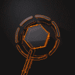

 |
Arkaan D. Muyassar, known online as 42SoL or MuyaZz, is a visual artist based in Tangerang, Indonesia. I like to make graphic designs that resembles the Y2K, the kind of aesthetics people would stare on their computer screen in the 2000's internet era. I'm also capable of making motion graphics that synchronizes with the audio, giving uniqueness and pleasant sense to both your perception and hearing at the same time. |
I really enjoy playing rhythm games as a hobby, and I aspire to get one of my songs into a rhythm game. If I were to go to an arcade, beatmania IIDX is my go-to main rhythm game. I often play CHUNITHM and mamai DX as well. If you live somewhere near me, let's get in touch and play together! (^^)
Starting from the beginning of my career in 2021, I have been active in the BMS (Be-Music Source) community. I often participate in BMS events as a composer, visualizer and a chart designer. In spring 2025, I won BM5 with "lost in a warm backlight with chromatic aberration" as jamais vu, an achievement I've always dreamed of, albeit the event only having 20 entries.
::
If you'd like to know more, feel free to message me via Twitter!